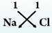
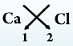
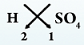
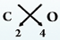
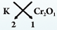
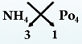
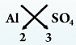
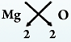

| Common misconception | Fact | |
|---|---|---|
| 1 | Noble metals like silver, gold can be synthesized from cheaper metals by chemical processes. | Naturally occurring metals cannot be synthesized by chemical methods. |
| 2 | Water and air were considered as elements. | Water is a compound and air is a mixture of elements. gases like \( N_2, \ O_2, \ CO_2 \) and inert gases. |
| 3 | Brass, bronze and other alloys are compounds of metals. | Brass, bronze and other alloys are homogeneous mixtures of two or more metals. |
Anything that occupies space and has mass is matter.Matter may exist as solid, liquid or gas. Matter can be classified in a number of ways. Three important ways in which matter can be classified is
| (i) | Based on the particle nature. | (a) Atoms | (b) Molecules | |
| (ii) | Based on physical states. | (a) Solid | (b) Liquid | (c) Gas |
| (iii) | Based on chemical composition. | (a) Elements | (b) Compounds | (c) Mixtures |
The great Indian Philosopher 'Kanada' of Vaiseshika Siddhanta (Meta physics) proposed that matter is composed of very small, tiny particles called Anus and Paramanus (molecules and atoms in the modern concept). Greek philosophers Democritis and Luccipus are credited with atomic theory of matter. However it is John Dalton, a British teacher who is regarded as the father of modern atomic theory. Atoms are tiny particles which cannot be further broken down. Atoms join together to form matter. Molecule is a group of atoms which is capable of independent existence.
They are rigid i.e. the inter molecular distances or spaces are fixed and they are the least.
Molecules are closely packed and have maximum attraction.
They cannot move or flow.
They cannot be compressed easily and appreciably without breaking.
They have a definite shape and size.
A sobd expands or contracts very little on heating or cooling. e•g• Book, chair, wood, stone
They are not rigid.
They have a definite volume.
They do not have definite shape of their own. They take the shape of container.
They flow from higher to a lower level.
The force of attraction between the molecules is weak.
They can be compressed to a small extent.
A liquid expands or contracts more than a solid, on being heated or cooled.
The intermolecular distances or spaces are not fixed and they are more than in solids.
e.g. Water, milk, honey.
They are not rigid.
They have neither definite shape nor a definite volume. They assume the shape of the container.
They can flow easily in all directions.
They can be compressed to a large extent easily.
Intermolecular distances or spaces are varying and they are maximum.
Molecules in gases have least attraction.
A gas expands or contracts to a large extent on being heated or cooled.
Based on chemical composition matter is classified into elements, compounds and mixtures Elements.
The simplest form of a pure substance which cannot be further divided into another as element. It is made up of only one kind of atoms.
e.g. Iron, copper, gold, oxygen, lead, nitrogen, silver. Elements are basic units or building blocks of a variety of substances. About 114 elements are known today, out of which 92 are found in the nature. The rest of the elements are artificially made by man. Some elements exist in a solid state like, e.g. gold, silver, copper, aluminium. Some elements do exist as liquids. e.g. bromine, mercury. Some few exist as gases, e.g. nitrogen, oxygen, helium.
Elements can be conveniently classified as -
Metals
Non-metals
Metalloids
Inert gases or noble gases
To denote or identify the elements some simple rules are followed.
Usually an element is denoted by the first letter (in English or Latin language) by a capital letter. For e.g. nitrogen and carbon have symbols N and C,
When first letter is same, as it happens for several elements two letters are taken. The first letter being capital letter followed by another alphabet as a small letter.
E.g. Cadmium - Cd
Magnesium - Mg
Chromium - Cr
Calcium - Ca
Manganese - Mn
However, the symbols for some elements are derived from Latin names, they are listed below.
| S.NO | Common Name | Latin Name | Symbols |
|---|---|---|---|
| 1 | Sodium | Natrium | Na |
| 2 | Potassium | Kalium | K |
| 3 | Iron | Ferrum | Fe |
| 4 | Copper | Cuprum | Cu |
| 5 | Lead | Plumbum | Pb |
| 6 | Tungsten | Wolfrorn | W |
| 7 | Silver | Argentum | Ag |
| 8 | Gold | Aurum | Au |
| 9 | Mercury | Hydragyrurn | Hg |
| 10 | Tin | Stannum | Sn |
| 11 | Antimony | Stibium | Sb |
Symbols for some cornmmi metallic and non - metallic elements
| S.NO | Element | Symbols | State at room temperature |
|---|---|---|---|
| Metals | |||
| 1 | Sodium | Na | Solid |
| 2 | Potassium | K | Solid |
| 3 | Magnesium | Mg | Solid |
| 4 | Aluminium | Al | Solid |
| 5 | Iron | Fe | Solid |
| 6 | Tin | Sn | Solid |
| 7 | Zinc | Zn | Solid |
| 8 | Calcium | Ca | Solid |
| 9 | Mercury | Hg | Liquid |
| Metals | |||
| 10 | Hydrogen | H | Gas |
| 11 | Nitrogen | N | Gas |
| 12 | Oxygen | O | Gas |
| 13 | Fluorine | F | Gas |
| 14 | Chlorine | Cl | Gas |
| 15 | Bromine | Br | Liquid |
| 16 | Iodine | I | Solid |
| 17 | Carbon | C | Solid |
| 18 | Sulphur | S | Solid |
| 19 | Silicon | Si | Solid |
| Metalloids | |||
| 20 | Bismuth | Bi | Solid |
| 21 | Antimony | Sb | Solid |
| 22 | Arsenic | As | Solid |
| 23 | Germanium | Ge | Solid |
| 24 | Tellurium | Te | Solid |
| Inert gases | |||
| 25 | Helium | He | Gas |
| 26 | Neon | Ne | Gas |
| 27 | Argon | Ar | Gas |
| 28 | Krypton | Kr | Gas |
| 29 | Xenon | Xe | Gas |
| 30 | Radon | Rn | Gas |
Substances made up of atoms of two or more different elements combined chemically ill fixed ratio. For e.g. Water molecule is made up of two different elements hydrogen and oxygen, with two hydrogen atoms and one oxygen atom thus water contains elements hydrogen and oxygen in a fixed ratio 2 : 1. It is denoted by the formula \( H_2O \)
Similarly, many substances like carbon dioxide, sulphur dioxide, acids, bases and salts are compounds.
If a pure substance cannot be broken down into two or three different atoms (instead of a same kind of identical atom), by heat, light or electricity ; then it is an element. On the otherhand if pure substance can be broken down into two or more simpler substances by applying heat, light or electricity; then it will be a compound. This can demonstrated by a simple experiment. A pinch of sugar is taken in a test tube and heated. It can be found that the sugar is charred which is nothing but a form of carbon an element and water vapour condenses on the walls of the test tube. Therefore, it can be concluded that the sugar has been decomposed into carbon, a charred mass and water vapour. Thus sugar cannot be an element but a compound.
If a dry glass rod is rubbed against silk and brought near the pith ball, it is attracted to it (as in fig. i), because an opposite charge develops in it due to induction. When the pith ball touches the rod (as in fig. ii), it is repelled (as in fig. iii), since both have the same charge due to conduction.
Elements and compounds are pure substances. Many substances which we see around us are not pure substances. They are in many cases mixtures. A mixture is a substance which consists of two or more elements or compounds which are not chemically combined together. For e.g air is a mixture of several gases like nitrogen, oxygen, helium (elements), carbon dioxide, water vapour, sulphur dioxide (compounds). e.g. Seawater, lime water, muddy water, kerosene, brass, soil, sugar solution, wood, alloys.
The mixtures can be of several types given as follows
Gas in Gas mixture - e.g. air.
Gas in Liquid mixture - e.g. soda water (carbon dioxide in water).
Liquid in Liquid mixture - eg. vinegar (acetic acid in water), Kerosene in water, alcohol in water.
Solid in Liquid mixture - e.g. sugar solution (sugar in water), salt solution (salt in water)
Solid in Solid mixture - e.g. soil, mixture of spices, alloys of metals (steel, brass, bronze, lead-tin solder)
Solid in Gas mixture - e.g. smoke (dust or solid carbon particles suspended in gaseous air).
There is yet, another way of classifing mixtures as homogeneous and heterogeneous mixture.
If one constituent spreads uniformly into another constituent without being identified or noticed, it is a homogeneous mixture. e.g. sugar solution, salt solution.
If the constituents unevenly distributed and can be physically identified or noticed, it is a heterogeneous mixture. e.g. sand in sugar, salt in sugar. It is to be remembered that generally in a mixture the constituents will not be a fixed ratio, except in certain mixtures, like solid solutions (alloys). The mixture can be separated into its constituents easily by physical methods like filtration, evaporation, sublimation and distillation.
| Compounds | Mixtures | |
|---|---|---|
| 1 | A compound is a pure substance. Its composition is always the same. It contains only one type of molecule. | A mixture is not a pure substance, its composition can vary and it contains different types of molecules. |
| 2 | A compound contains the constituent elements in a fixed ratio. | The constituents of a mixture may present in any ratio. |
| 3 | It is homogeneous. | It is usually heterogeneous. |
| 4 | It exhibits definite properties. | Its properties are variable. |
| 5 | Energy is absorbed or released during the formation of compounds. | Energy is neither absorbed nor released. |
| 6 | Its components can be separated by chemical method | Its components can be separated by physical methods. |
Now atom can be defined as a smallest part of an element which may or may not have independent existence, but always takes part in chemical reaction. Molecule is now considered as the smallest unit of a compound or of independently existing pure substance.
E.g
\( CO_2, \ H_2 O, \ H_2SO_4 \) are molecules of compound.
\( O_2, \ N_2 , \ H_2 \) are molecules of elements.
Number of atoms present in a molecule is called atomicity. For e.g. Hydrogen cannot exist as a independent atom. It has to exist as a molecule consisting of two hydrogen atoms \( (H_2) \) . Hence its atomicity is 2, diatomic. Similarly in some compounds 3 atoms are present. They are triatomic. E.g Carbon dioxide \( (CO_2) \) , Ozone \( (O_3) \) . Some elements like Helium (He), Argon (Ar), can exist as a single atom. Their atomicity is 1, monoatomic. Many compounds do exist as polyatomic (more than 3 atoms in a molecule). E.g. Methane \( (CH_4) \) , Ethylene \( (C_2 H_4) \)
| S.No. | Elements/compound | Symbol/formula | Atomicity |
|---|---|---|---|
| 1 | Hydrogen | \( H_2 \) | 2 |
| 2 | Nitrogen | \( N_2 \) | 2 |
| 3 | Oxygen | \( O_2 \) | 2 |
| 4 | Helium | He | 1 |
| 5 | Chlorine | \( Cl_2 \) | 2 |
| 6 | Carbon dioxide | \( CO_2 \) | 3 |
| 7 | Sulphur dioxide | \( SO_2 \) | 3 |
| 8 | Water vapour | \( H_2 O \) | 3 |
| 9 | Ozone | \( O_3 \) | 3 |
| 10 | Methane | \( CH_4 \) | 5 |
According to old concept, valency is the combining capacity of an element with the other atoms is called the valency of the element. It is defined as the number of hydrogen atoms that combine with or can be displaced by one atom of the element. Therefore, the valency of oxygen is 2 and the valency of hydrogen is taken to be 1.
It is defined as number of electrons either lost or gained by an atom of an element.
Atom is basically neutral. If it loses an electron or gains an electron it becomes charged
particle called 'Ion'. When an atom of an element loses electrons, the positive charges in the nucleus out number the negative charges outside the nucleus. Hence it becomes a positively charged ion called Cation.
E.g. \( Na^+, \ Mg^{++}, \ Al^{+++} \ (also \ Mg^{2 +}, \ Al^{3+}) \) .
When an atom gains electrons it becomes as negatively charged as the number of negative charges out number the positive charges in the nucleus. It is called anion.
E.g. \( Cl^{-} \)
Usually a compound has two parts head and tail for instance \( H_2SO_4 \) . Hydrogen \( (H_2) \) and sulphate \( (SO_4) \) are called radicals. Simple radicals have only single atom like Na and Cl. A compound radical like \( (SO_4), \ NO_3, \ PO_4, \ CO_3 \) consist of group of atoms.
Following is the list of valencies of some elements and radicals.
| S.No. | Elements/radical | Symbol/formula | Valency |
|---|---|---|---|
| 1 | Sodium | Na | 1 |
| 2 | Potassium | K | 1 |
| 3 | Calcium | Ca | 2 |
| 4 | Zinc | Zn | 2 |
| 5 | Magnesium | Mg | 2 |
| 6 | Aluminium | Al | 3 |
| 7 | Phosphorus | P | 5 |
| 8 | Copper | Cu | 1, 2 |
| 9 | Carbon | C | 4 |
| 10 | Nitrogen | N | 3, 5 |
| 11 | Iron | Fe | 2, 3 |
| 12 | Sulphur | S | 2, 4, 6 |
| 13 | Oxygen/oxide | O | 2 |
| 14 | Chlorine/chloride | Cl | 1 |
| 15 | Iodine/iodide | I | 1 |
| 16 | Hydroxide | OH | 1 |
| 17 | Nitrate | \( NO_3 \) | 1 |
| 18 | Nitrite | \( NO_2 \) | 1 |
| 19 | Ammonium | \( NH_4 \) | 1 |
| 20 | Sulphate | \( SO_4 \) | 2 |
| 21 | Sulphide | S | 2 |
| 22 | Sulphite | \( SO_3 \) | 2 |
| 23 | Carbonate | \( CO_3 \) | 2 |
| 24 | Bicarbonate | \( HCO_3 \) | 1 |
A symbol denotes an element. It represents an element. It is the shortened identity of an element.
Carbon : C
Sodium : Na (Natrium)
Potassium : K (Kalium)
By knowing valency, we can make a formula of chemical compound.
Chemical compound is electrically neutral. In otherhand, the sum total of positive and negative valencies of ions or radicals present in a chemical compound is zero.
For writing a formula, a single, versatile method called "criss-cross method" explained here.
Step 1 : Write symbol of positive ion or radical to the left and for negative ion or radical to the right.
Step 2 : Put the valency number of each ion or radical at the top. Do not put (+) or (-) symbols. Put the valency numbers in integers: (Like 1, 2, 3 etc.)
Step 3 : Shift the valency number to lower right side.
If the radicals get a number more than one, enclose it with in brackets. Do not enclose ions within brackets.
Following examples enable you to understand writing formulae of chemical compounds. Writing formulae of chemical compounds:
| Compound | Symbols with Shifting valencies Formula Step I, II | Shifting valencies number (Step III) | Formula |
|---|---|---|---|
| Sodium chloride | \( N \overset{ \overset{1}+}{a} \ \overset{ \overset{1}-}{Cl} \) |

|
NaCl one valenices can be ignored |
| Calcium chloride | \( C \overset{ \overset{2}2+}{a} \ \overset{ \overset{1}-}{Cl} \) |

|
\( CaCl_2 \) |
| Sulphuric acid | \( \overset{ \overset{1}+}{H} \ \overset{ \overset{2}2-}{SO_4} \) |

|
\( H_2SO_4 \) |
| Carbon dioxide | \( \overset{ \overset{4}4+}{C} \ \overset{ \overset{2}2-}{O} \) |

|
\( CO_2 \) simple ratio 1 : 2 |
| Potassium Dichromate | \( \overset{ \overset{1}1+}{K} \ \overset{ \overset{2}2-}{Cr_2O_7} \) |

|
\( K_2Cr_2 O_7 \) |
| Ammonium Phosphate | \( N \overset{ \overset{1}1+}{H_4} \ \overset{ \overset{3}3-}{PO_4} \) |

|
\( (NH_4)_3 PO_4 \) |
| Aluminium Sulphate | \( \overset{ \overset{3}3+}{Al} \ \overset{ \overset{2}2-}{SO_4} \) |

|
\( Al_2 (SO_4)_3 \) |
| Magnesium oxide | \( \overset{ \overset{2}2+}{Mg} \ \overset{ \overset{2}2-}{O} \) |

|
MgO (2 : 2 or 1 : 1 ignore) |
Further it is not always possible to write a chemical equation with full name of an element.
\( Carbon + Oxygen \rightarrow Carbon \ dioxide \)
It is easier to write
\( C + O_2 \rightarrow CO_2 \)
On the otherhand a formula denotes a compound.
Water : \( H_2 O \)
A formula gives information about :
which elements are present in the compound.
how many atoms of an elements are present in the compound
the ratio of different elements present in the compound.
Chemical equation is a statement which describes or explains a chemical change in
terms of symbols and formulae.
\( \begin{align} C + O_2 \rightarrow CO_2 \\\\[3pt]
Carbon + Oxygen \rightarrow Carbon \ dioxide \\\\[3pt]
H_2 + O_2 \rightarrow \ H_2 O \\\\[3pt]
Hydrogen + Oxygen \rightarrow Water \\\\[3pt]
CaCO_3 + CaO + CO_2 \\\\[3pt]
Calcium \ carbonate \rightarrow Calcium \ oxide + Carbon \ dioxide \\\\[3pt]
H_2 + Cl_2 \rightarrow HCl \\\\[3pt]
Hydrogen + Chloride \rightarrow Hydrogen \ Chloride \end{align} \)
The substances to the left of the Arrow ( \( \rightarrow \) ) are called Reactants. The substances to
the right of the Arrow are called Products.
\( \begin{align} A + B \rightarrow C + D \\\\[3pt]
Reactants \rightarrow Products (Resultants) \end{align} \)
Arrow \( \rightarrow \) Implies yield to or form to
Number of Reactants or Products can be added by "+" sign.
An equation is writing number of atoms of each element in reactants (left side of arrow) is equal to the number of atoms for the same products (right hand of arrow), the equation is said to be balanced (said).
\( \begin{align} C + O_2 \rightarrow CO_2 \\\\[3pt]
2H_2 + O_2 \rightarrow 2H_2 O \end{align} \)
Now, both sides hydrogen and oxygen have same number of atoms when 2 is added to \( H_2 \) and \( H_2O \) .
| Ion or radical | Formula |
|---|---|
| Monovalent | |
| Chloride | \( Cl^{-} \) |
| Bromide | \( Br^{-} \) |
| Iodide | \( I^{-} \) |
| Hydride | \( H^{-} \) |
| Nitrite | \( {NO_2}^{-} \) |
| Nitrate | \( {NO_3}^{-} \) |
| Bicarbonate or Hydrogen carbonate | \( HCO_3^{-} \) |
| Bisulphate or Hydrogen sulphate | \( {HSO_4}^{-} \) |
| Bisulphite or Hydrogen sulphite | \( {HSO_3}^{-} \) |
| Hydroxide | \( {CH_3COO}^{-} \) |
| Bivalent | |
| Sulphate | \( {SO}{_4^{2-}} \) |
| Peroxide | \( {O}{_2^{2-}} \) |
| Sulphite | \( {SO}{_3^{2-}} \) |
| Carbonate | \( {CO}{_3^{2-}} \) |
| Sulphide | \( {S}^{2-} \) |
| Silicate | \( {SiO}{_3^{2-}} \) |
| Oxide | \( {O^{2-}} \) |
| Zincate | \( {ZnO}{_2^{2-}} \) |
| Tivalent | |
| Phosphate | \( {PO}{_4^{3-}} \) |
| Phosphite | \( {PO}{_3^{3-}} \) |
| Phosphide | \( P^{3-} \) |
| Nitride | \( N^{3-} \) |
Write the symbol of an element, based on the planet Neptune.
Solution:
The element is Neptunium and its symbol is Np.
Write the symbol of an element, based on the scientist Fermi.
Solution:
The element is Fermium ( Fermi - the scientist name). Its symbol is Fm.
Write the chemical formula of Aluminium sulphate.
Solution:
First, we write the positive and negative valencies side as by side superscript on the right hand side.
Interchange the valencies and write only their numbers as subscript an the right hand side.
\( Al_2(SO_4) \) is the chemical formula of Aluminium sulphate.
What is the valency of Fe in FeO and \( Fe_2O_3 \) ?
Solution:
Iron atom FeO combines with one oxygen atom, to give FeO and hence, the valency of Iron in FeO is 2.
Let us consider \( Fe_2O_3 \) . Two Fe atoms combine with three 'O' atoms.
\( \therefore \) One Fe atom combines with \( \frac{3}{2} \) 'O' atoms.
The valency of an atom or a radical, is also defined as double the numbers of oxygen atoms, with which, it combines.
\( \therefore \) The valency of Fe is twice the number of oxygen atoms, with which, it combines. The valency of Fe is twice the number of oxygen atoms, with which, one Fe atom combines = \( 2 \left ( \frac{3}{2} \right ) \) = 3
\( \therefore \) Valency of Fe in \( Fe_2O_3 \) is 3.
Write the equation for preparation of oxygen, by heating potassium chlorate.
Solution:
Setp 1 : Write the equation in words.
Potassium chlorate \( \xrightarrow{on \ heating} \) Potassium Chloride + Oxygen
Setp 2 :Write the unbalanced equation, using symbols and formulae.
\( KClO_3 \xrightarrow{\triangle} KCl + O_2 (unbalanced) \)
Setp 3 : Balance the chemical equation, by determining the coefficients, that provide
equal number of each type of atoms, on each side of the equation.
\( 2KClO_3 \rightarrow 2KCl + 3O_2 (balanced \ equation) \)
Indicate the physical state of each chemical, by using the symbol (g), (1),
and (s) (for gas, liquid and solid respectively).
\( 2KClO_3(s) \rightarrow 2KCl(s) + 3O_2 (g) \)
Write the formula of the following compounds for the chemical name given below.
Aluminium nitrate
Calcium phosphate
Solution:
\( Al(NO_3}_3 \)
\( Ca_3(PO_4}_2 \)
Balance the following chemical equations :
\( Mg CO_3 + HNO_3 \rightarrow Mg(NO_3)_2 + H_2 O + CO_2 \)
\( C + HNO_3 \rightarrow CO_2 + H_2 O + NO_2 \)
Solution:
\( Mg CO_3 + 2HNO_3 \rightarrow Mg(NO_3)_2 + H_2 O + CO_2 \)
\( C + 4 HNO_3 \rightarrow CO_2 + 2H_2 O + 4NO_2 \)
Is soil a homogeneous or heterogeneous mixture ? Explain.
Solution:
Soil is heterogeneous mixture as its composition is not same throughout.
The element hydrogen is combustible and the element oxygen is a supporter of combustion. However the compound water, formed from hydrogen and oxygen, is neither combustible nor a supporter of combustion. Why?
Solution:
Water is a compound. It is made up of the elements hydrogen and oxygen. Once the compound has formed, the elements, i.e., hydrogen and oxygen.The properties of a compound are different from those of its constituent elements.
Explain how a mixture of common salt and chalk can be separated.
Solution:
The individual components of a mixture can be separated by physical methods. The mixture of common salt and chalk when dissolved in water as common salt is soluble in water and chalk is insoluble in water.